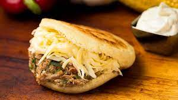

Arepas
Volver al menu de Recetas

Plato tipico venezolano que comemos a diario
ingredientes
- Harina pan o harina Juana
- sal
- agua
- Carne mechada
- queso amarillo
- Mantequilla
Pasos
- Mezclar con agua y sal
- Hacer forma redonda
- Poner en el sarten con aceite
- Esperar a que esten tostadas
- Retirarlas de sarten, abrirlas y ponerle el relleno
- Comer
Si no sabes hacer arepa no sabes vivir